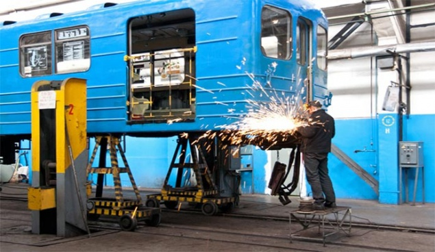
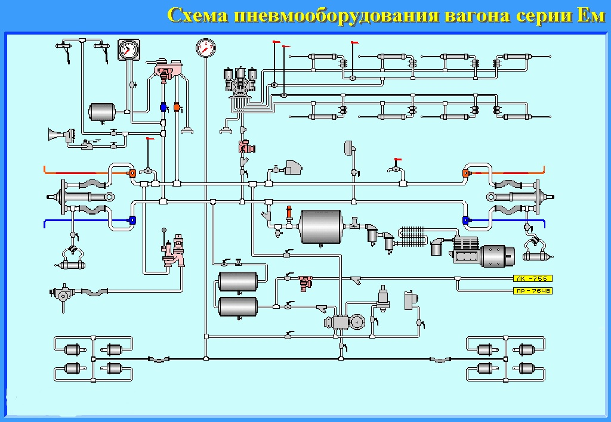
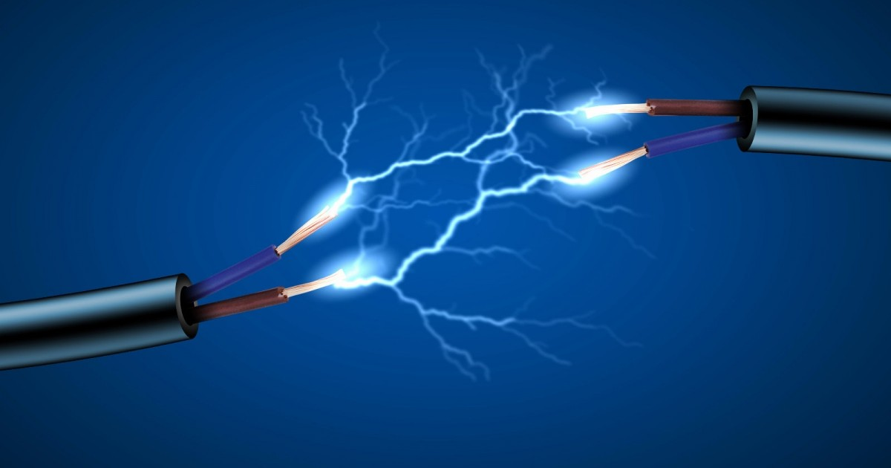

Механическое оборудование
Основные части механического оборудования
- Кузов вагона, состоящий из:
-
- рамы кузова;
- каркаса;
- наружной обшивки;
- пола;
- крыши;
- внутренней обшивки;
- внутрисалонного оборудования (двери, окна, диваны, поручни)
- вентиляция вагона (естественная для вагонов типов Еж-3, Ем-508т, комбинированная для вагонов 81-717,81-714 и их модификаций, принудительная для вагонов 81-718, 81-719).
- Ходовая часть – тележка, состоящая из:
-
- рамы;
- колесных пар с редуктором и буксами;
- тяговых двигателей;
- центрального рессорного подвешивания;
- буксового рессорного подвешивания;
- рычажно-тормозной передачи;
- подвески редуктора;
- подвески тягового двигателя;
- карданной муфты;
- токоприемников.
- Автосцепки.
- Ручной тормоз (вагоны типа Еж-3, Ем-508т).
- Блок – тормоз.
- Привод авторежима.
- Рельсозмазыватель.
Пневматическое оборудование
Пневматикой называется совокупность пневматических устройств и приборов, объединенных в одну группу по назначению, типу выполняемой ими работы, а также по функциональной зависимости друг от друга. На каждом вагоне метро существует семь самостоятельных пневматик: напорная, тормозная, автостопная, дверная, управления и вспомогательная.
Электроаппараты
В веществе, помещенном в электрическое поле, возникает процесс направленного движения элементарных носителей электричества. Заряженными частицами являются электроны или ионы. Движение этих электрически заряженных частиц называется электрическим током.
Единицей силы тока служит Ампер (А). Это такой ток, при котором через поперечное сечение проводника каждую секунду проходит количество электричества, равное 1 Кл. В формулах ток обозначают буквой I.